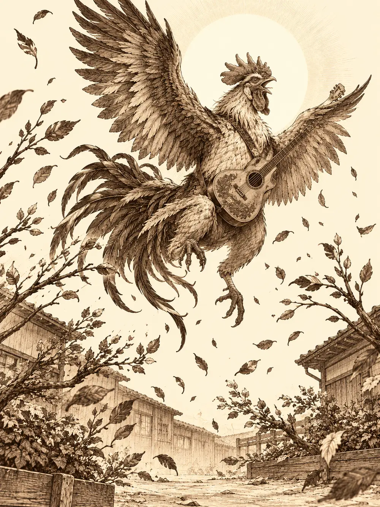

Capítulo 67
Estafa en la casa de inversiones
Libro V · Los guardianes del Norte y del Sur
Por las noches, en la base de Sho, se oían gritos.
Venían del cuarto de Sirth. Habían pasado dos semanas desde el torneo y el clérigo no salía. Había dicho que estaba enfermo, que no entrara nadie, que podía ser contagioso, y había cerrado la puerta. De día apenas se le oía. De noche se le oía demasiado: se revolvía, gemía, a veces gritaba, como quien no consigue salir de una pesadilla. Ermitaño llamó una tarde con los nudillos y se ofreció a echarle un vistazo. Era sanador, dijo, quizá pudiera hacer algo. La puerta no se abrió.
El firbolg ocupaba los días en otras cosas. Les había puesto bolsas a los dos yokai del polvo de la otra base, como había prometido, y cuidaba de todas las criaturas de las dos casas, las que tenían dueño y las que no. Escuchaba también los chismes de los cazadores, que eran muchos. Shigeru seguía buscando reparaciones y estudiaba por las noches las notas del librero sobre contrapesos y muros. Katari se había pasado aquellos días en el bosque, hablando con animales y espíritus.
"Podríamos ir a reconocer el terreno del sur", propuso Ermitaño. "Prepararnos para cuando haya que buscar el templo".
Alguien les recordó que el viaje hasta allí llevaba un mes. Lo dejaron para más adelante.
Shigeru tenía otra idea. Había oído que algunos vecinos estaban perdiendo dinero, todos sus ahorros, en una casa de inversiones de la ciudad. No sabía si era un delito o simple mala suerte, pero tenía mala pinta. Decidieron preguntar en la taberna.
La taberna estaba vacía. El tabernero se quejó de que no tenía clientes: todo el mundo se había ido a la plaza a escuchar a un músico.
La música se oía desde la puerta. Una guitarra y una voz que cantaba a pleno pulmón pidiendo una cerveza a una tal chinita. Shigeru y Ermitaño bajaron a ver quién era.
Era un gallo. Un gallo enorme, del tamaño de un hombre, con cresta roja, plumas de colores y una guitarra colgada del cuello, que cantaba en mitad de la plaza mientras la gente se apartaba de él. Se llamaba Infinito. Shigeru se le unió con más entusiasmo que oído, y la gente se apartó un poco más.
"¡No os vayáis, que no tengo público!".
"¿Qué hay que hacer en este pueblo para ganar dinero?", preguntó el gallo, mirando a los dos recién llegados.
"Trabajar", le dijo Shigeru. "El tabernero se queja de que tiene la taberna vacía. Llévale a la gente, en vez de alejarla".
Infinito dijo que antes tenía un último número. Dio un salto, un salto altísimo, aleteando, y se quedó un instante en el aire justo delante del sol. Cuando aterrizó ya estaba tocando. Las ramas de los árboles y las flores de los arriates se doblaron hacia él como si las atrajera un imán. La gente se quedó mirándolo con la boca abierta. Shigeru también. Ermitaño notó algo que tiraba de él y no le hizo caso; solo vio a un gallo delante del sol.
Infinito echó a andar tocando, y la gente lo siguió en fila, cantando. Shigeru iba detrás, embobado. Salieron un par de mujeres de un local cercano y se unieron. Así llegaron a la taberna.
El gallo cerró allí el trato con el tabernero: él tocaba, la gente consumía y lo que recaudara se lo repartían a medias. Tocó media hora. Sacó sesenta monedas, le dio la mitad al tabernero y con lo suyo pagó unas cervezas para la gente de las mesas. Ermitaño se sentó en la esquina más alejada con dos frutas pequeñas metidas en las orejas.
Katari apareció más tarde. Había ido a comprar a la tienda de pociones: una que protegía contra los golpes en la mente, otra contra el fuego, un par de curación y unos frascos de veneno con los que untar flechas. Al entrar vio a la gente bebiendo tranquila y a un pollo gigante con una guitarra.
Fue en la taberna donde oyeron las quejas. Un par de vecinos refunfuñaban en la barra. La casa de inversiones les había sacado todos los ahorros.
"Tú vas, dejas tu dinero, ellos lo invierten y luego te devuelven una cantidad razonable. Tienen muy buen nombre en la ciudad. Pero ahora me dicen que ha salido todo mal y que no me pueden devolver nada. Me han arruinado".
Ermitaño le dijo que podían echar una mano, aunque eso no fuera exactamente cosa de cazadores. Infinito se apuntó. Quería ayudar a aquella gente a recuperar lo suyo y, de paso, cobrar algo por el negocio.
El barrio rico de Sho no se parecía al resto de la ciudad. Había parques grandes y verdes, calles anchas y casas tan enormes que en cada una podría haber vivido un ejército. Entre ellas, casas de subastas, de cambio, de inversiones. La suya tenía un letrero enorme sobre la puerta: Invertir aquí es seguro. Al lado, un muñequito pintado que sonreía.
"Ese muñeco me da muy mal rollo", dijo Infinito.
Dentro había cola. Ancianos sentados contando monedas, gente de pie esperando turno y tres recepcionistas detrás de un mostrador.
Katari se acercó a una. Quería saber si aquello era fiable. La recepcionista le aseguró que sí, que siempre había quien se quejaba cuando una inversión le salía mal, pero que mirara cuánta gente tenían, y le enseñó desde lejos unos papeles con el sello del shogun: acreditaciones oficiales.
"¿Me permite verlos?".
"No puedo darle esa información, señorita".
"Si tiene papeles oficiales, debería dejar que la gente los lea".
Discutieron. Katari pidió hablar con el jefe. La recepcionista resopló, le puso el papel delante y le dijo que lo leyera. Katari lo leyó. Lo intentó, al menos. Eran cláusulas y más cláusulas, estipulaciones dentro de otras estipulaciones, una letra tan pequeña que acababa por no decir nada. Le pasó el papel a Ermitaño. El clérigo tampoco sacó nada en limpio.
Mientras tanto, Infinito había desaparecido. Se había pegado a la pared, había esperado a que las tres recepcionistas miraran hacia la discusión y se había colado por una puerta. Detrás había un pasillo: una sala de espera, un baño y, al fondo, una puerta con barrotes en la ventanilla. Se asomó. Dentro, de espaldas, un hombre grande con una armadura demasiado elegante para un guardia revisaba papeles sobre una mesa. A un lado había unas escaleras que subían.
Desde allí dentro, con algo de magia y su voz, el gallo consiguió que dejaran pasar a sus compañeros. Shigeru y Katari se le unieron en el baño. Katari se convirtió en una araña pequeña y trepó por la pared.
Ermitaño tenía su propio plan. Se cubrió con un disfraz mágico y adoptó el aspecto de un cliente rico, uno cualquiera, el primero que se le ocurrió. Las recepcionistas lo reconocieron enseguida.
"¡Señor Antonio! Pase, pase".

Resultó que el tal Antonio existía, y que tenía allí invertidas quince mil monedas. Lo condujeron arriba a una reunión.
Infinito no paraba de canturrear por lo bajo. El guardia lo oyó. Shigeru y él tuvieron que subir las escaleras a toda prisa.
En el piso de arriba había un pasillo con varias puertas. Al fondo, una mujer pasaba la fregona mirando al suelo. Se giró al oírlos.
"¿Y vosotros quiénes sois?".
Infinito le cantó algo y la mujer se quedó dormida de pie, con la fregona clavada en el suelo y un hilo de baba colgándole hasta la rodilla. La llevaron entre los dos a un almacén. A Shigeru se le ocurrió ponerse su ropa. La taparon con una manta y unas cajas para que pareciera que se estaba echando una siesta en horas de trabajo, y el monje salió al pasillo vestido de mujer de la limpieza, con fregona y todo.
En una sala de reuniones, al otro lado del pasillo, le estaban diciendo al supuesto Antonio que su inversión se había perdido. Toda. Que no iban a devolverle nada. Ermitaño perdió los nervios y dio un golpe en la mesa que casi la partió por la mitad. Las monedas que había encima saltaron por el suelo. Uno de los responsables se lo quedó mirando y vio cómo su cara temblaba, como el reflejo en un charco cuando le cae una gota.
"Ese señor no es Antonio. Lleva un conjuro encima. Hay que avisar a la guardia".
Katari lo observaba todo desde el techo, con sus ocho patas.
Se llevaron a Ermitaño abajo y uno de ellos salió a buscar a los guardias del shogun. La sala de reuniones quedó vacía y revuelta, con la mesa rajada y las monedas desparramadas. Shigeru se asomó. Recogió ciento setenta monedas del suelo. El gallo buscaba otra cosa.
Encontró un libro de cuentas. Dentro había nombres, y algunos eran los que les habían dado los vecinos en la taberna. Uno que había perdido trescientas monedas. Otro que había invertido seiscientas y solo había recuperado cien. Infinito tenía buen ojo para los números y enseguida vio que las cuentas no cuadraban: las cifras estaban trucadas, y a muchos de aquellos clientes deberían haberles devuelto bastante más de lo que ponía allí.
"Deja de perder el tiempo con la calderilla. Aquí están estafando a la gente".
Shigeru se escondió el libro debajo de la ropa de la limpiadora. Iba a salir cuando un empleado lo agarró de la manga.
"Señora, venga aquí. Mire cómo está esto. Límpielo".
"Es que estoy indispuesta, señor. Estoy muy mareada".
"Está usted perfectamente. Venga".
Lo metió en un despacho lleno de oro y se quedó apoyado en una vitrina, leyendo, con la puerta abierta. Después de seis años trabajando allí, le recordó, ya debería saber que las puertas se dejaban abiertas mientras se limpiaba. Shigeru limpió.
Abajo llegaron dos guardias del shogun. Los responsables de la casa les contaron su versión: aquel hombre había venido a amenazarlos, decía que lo habían estafado, no sabía encajar una pérdida y había roto una mesa. Y además se había hecho pasar por un cliente.
Ermitaño se quitó el disfraz con las manos en alto. Katari bajó del techo y recuperó su forma para explicar lo que estaban investigando. Los guardias pidieron los papeles de la casa, los miraron y se los devolvieron.
"Está todo en orden. Tienen los papeles del shogun. Es un negocio oficial".
Les dijeron que para investigar necesitaban un permiso. Que hacerse pasar por otra persona para sacar dinero era un delito grave. Apuntaron sus nombres, prometieron trasladar la queja y los acompañaron a la calle con la orden de no volver hasta que se les avisara.
Arriba, Shigeru e Infinito no sabían nada. Seguían dentro, con el libro, y el gallo iba cantando a los empleados que se cruzaban hasta dejarlos dormidos.
En la calle, Katari no esperó. Le puso la mano en el pecho a Ermitaño y el firbolg se convirtió en un águila gigante, de alas tan anchas como la calle. Ella también cambió de forma para volar a su lado. Ermitaño no sabía volar, nunca lo había hecho, pero Katari le hablaba dentro de la cabeza y le iba diciendo qué hacer con las alas. Subieron hasta la terraza del tercer piso. Allí Katari volvió a hacerse araña y se coló dentro a buscar a los otros.
Los encontró. Infinito había atado a los empleados dormidos y en el bolsillo de uno había encontrado una llave pequeña. Se reunieron en la terraza con el libro. Katari escribió una nota, llamó a un ave y le ató el libro a las patas. El pájaro se perdió sobre los tejados camino de la base.
Podían haberse ido entonces. No lo hicieron.
Abrieron otra sala. Dentro había dos empleados que reconocieron enseguida el disfraz de Shigeru. El monje aturdió a uno de un golpe. Infinito le contó al otro algo tan gracioso que se cayó al suelo retorciéndose de risa. Los ataron. Ermitaño los dejó ciegos con una oración.
Buscaron una cuenta que lo explicara todo, un sitio adonde fuera a parar el dinero desviado, y no la encontraron. Lo que sí había en aquella habitación eran cajas fuertes. Muchas. Eligieron tres, las ataron juntas con cuerdas, e Infinito las encogió con su magia hasta un tamaño que una araña gigante, invocada por Katari en la terraza, pudiera llevar a cuestas.
Quedaba bajar. Infinito saltó por el borde de la terraza y bajó flotando, despacio, como una pluma. Shigeru saltó detrás y descendió a su lado a la misma velocidad; desde allí arriba se veía media ciudad. Ermitaño, con su armadura de piedra, no quiso esperar. Se tiró.
Katari le lanzó una telaraña en el último momento. Lo atrapó. El clérigo se balanceó colgando del hilo, se dio con la cabeza contra el suelo del callejón y se quedó un rato viendo lucecitas.
Atravesaron Sho como si fueran una compañía de espectáculo: un gallo con guitarra, una araña gigante con tres cajas fuertes a la espalda, un firbolg cantando a voz en cuello y un monje vestido de mujer que miraba a todos lados como si no fuera con ellos. La gente los seguía con la vista, marcaba el ritmo con el pie y luego se quedaba murmurando, sobre todo por el monje.
Llegaron a la base sin que nadie los detuviera. Dejaron las cajas en el suelo. Ermitaño quería revisar el libro y devolverle a cada vecino lo suyo. Shigeru puso sobre la mesa las ciento setenta monedas que había recogido.
Las cajas seguían cerradas. Nadie sabía qué había dentro. Podía haber oro, o papeles, o nada. Infinito se buscó una cama y antes de dormirse dejó la llave pequeña con una nota encima: a lo mejor servía para abrirlas. Pensaban pedir ayuda a alguna compañera que supiera de cerraduras. Por la noche, desde el cuarto de Sirth, volvieron a oírse los gritos.